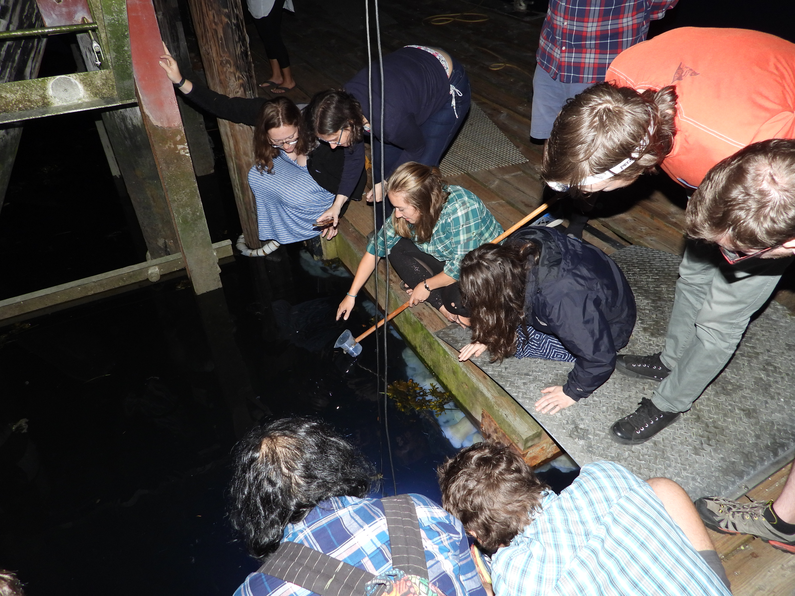

Diversity, Equity, & Inclusion
I am committed to expanding access within STEM fields to historically minoritized students, both through recruitment initiatives and by creating a more inclusive environment within the STEM community.
Evolution & Ecology Graduate School Preview Day
Founding Logistics Coordinator | 2020
UC Davis
Graduate programs and most departments in Evolution, Ecology, & Behavior (EEB) fields are predominantly white. We at the Population Biology Graduate Group Diversity Committee think we can do better, especially in a state with as diverse a population as California. Though there are many graduate recruitment initiatives between UCs and the nearby CSU system, many are geared towards students interested in biomedical graduate programs. Evolution & Ecology Graduate School Preview Day is a daylong program that will bring senior undergraduate and Masters students from CSU campuses across California to UC Davis for a day to learn about graduate opportunities in EEB fields through informational sessions, panels, and networking events with faculty and graduate students.
Our very first Preview Day will be held at UC Davis in fall 2020. We are excited to invite ~20 students to Davis for our upcoming event.
Population Biology Diversity Committee
Founding Member | 2020 - present
UC Davis
I was a founding member of the Population Biology Graduate Group Diversity Committee in Fall 2016. Since then, we have worked with the Population Biology Graduate Group and the Center for Population Biology to increase the inclusion of our graduate group. We have made changes to the language on the Population Biology website, developed and distributed resources for incoming first-year students, and we have
We wrote a pedagogy paper about our experience with the Fish Shapes CURE: look for it soon from Integrative Organismal Biology!
 Outreach at UC Davis
Outreach at UC Davis
Fish Biodiversity Outreach
UC Davis
I have participated in multiple outreach events at UC Davis. I have been a station leader for the fish station at a two-time Best Life Sciences exhibit for the Tree of Life at UC Davis' Picnic Day, where 100,000 visitors visit the Davis campus.